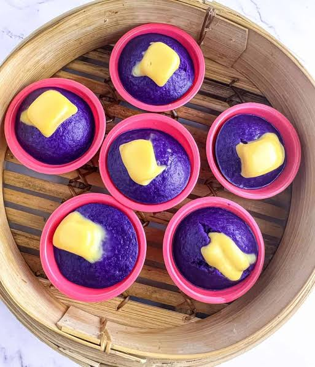

The Best Seller "The Putoshuk"
Putoshuk is a soft and fluffy Filipino puto infused with the aromatic flavor of pandan.
.jpg) View Details
View Details
Puto with different flavors that will shock your sense of taste

Putoshuk is a soft and fluffy Filipino puto infused with the aromatic flavor of pandan.
View Details
Puto Ube is a soft and fluffy Filipino puto infused with the rich and sweet flavor of ube.

View DetailsPuto Leche is a soft and delicate Filipino rice cake topped with a smooth, creamy leche flan.
 View Details
View Details
Puto Pao combines the soft, fluffy texture of traditional puto with a savory pork asado filling inside.
 View Details
View Details